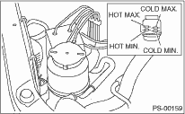

POWER ASSISTED SYSTEM (POWER STEERING) > Power Steering Fluid
1. Check the power steering fluid for deterioration or contamination. If the fluid is highly deteriorated or contaminated, drain it and refill with new fluid.
2. Check the joints and units for oil leakage. If any oil leaks are found, repair or replace the applicable part.
3. Inspect the fluid level of reservoir tank with vehicle on level surface and engine stopped.
If the level is at “MIN.” point or below, add fluid to keep the level in the specified range of the indicator. If fluid level is at “MAX.” point or above, drain fluid by using a syringe or the like.
(1) If the power steering fluid temperature is 20°C (68°F) or less, read the fluid level on the “COLD” side.
(2) If the power steering fluid temperature is 80°C (176°F) or more, inspect the fluid level on the “HOT” side.
